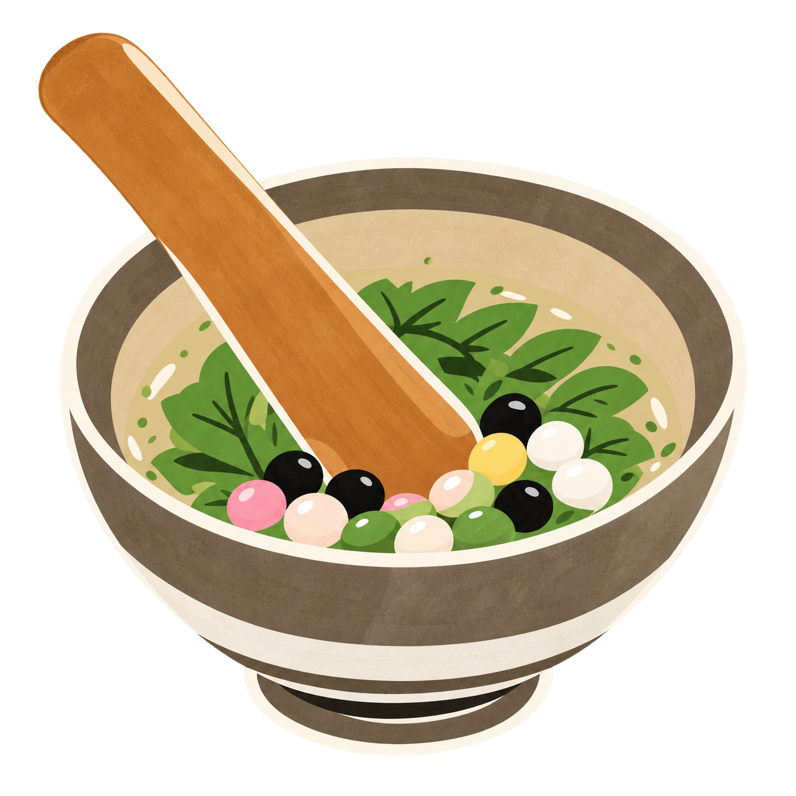
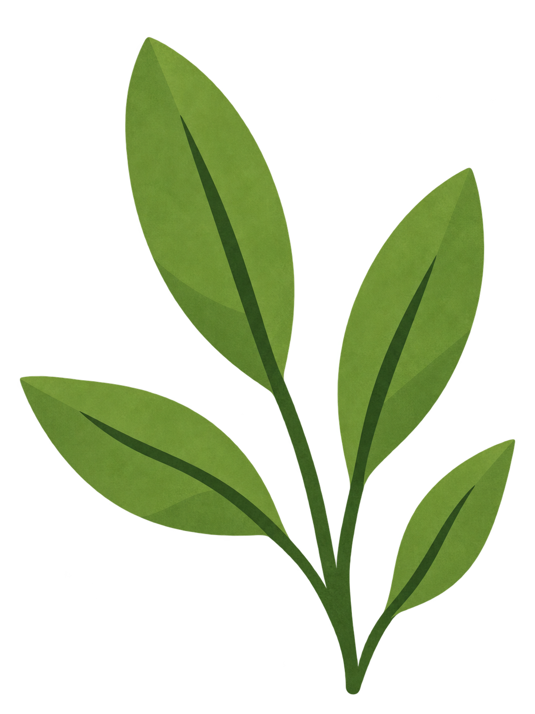
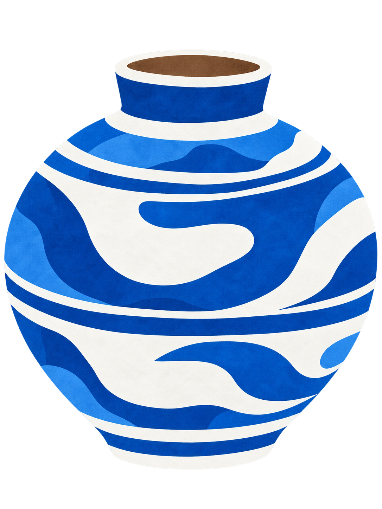
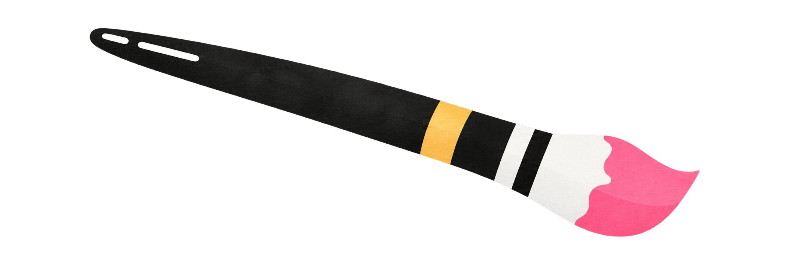
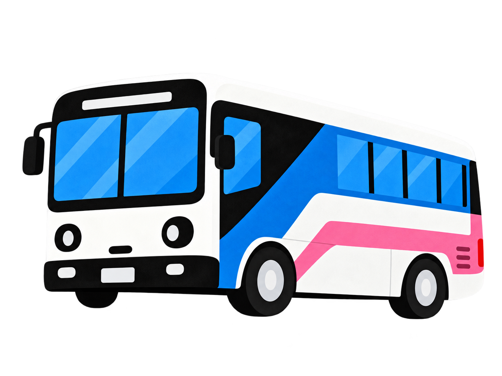
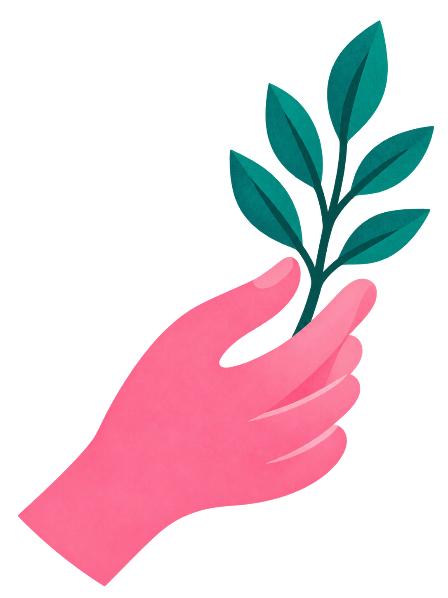

客家創新創業社
讓客家，被看見。
讓想法，長出可能。
一群對文化好奇、對未來有想法的人，
從客家出發，一起創意、創新、創業。


01 / ABOUT US
同客家帶入創意，分文化行向未來

02 / OUR PHILOSOPHY
三創原則

社團事跡
04 / SEE YOU SOON
下一次，一起出發吧。
社團行事曆GOOGLE CALENDAR
在 Google 行事曆開啟 ↗
05 / Event Highlights
活動照片精選
收藏每一個「我們都在」的瞬間。
06 / PASS IT ON
每一屆，都留下新的可能。
從一群人，到下一群人。
PLAY / 生活體驗室
動動手，和客家一起玩。
一碗茶、一份粢粑、一口甜。
跟著自己的節奏，體驗手作的樂趣。
有疑問？這裡找答案。
點選問題，或輸入「加入社團」「活動」「遊戲」等關鍵字。
還沒有符合的回答。你可以換個關鍵字，或私訊社團 Instagram詢問。

有一個想法嗎？